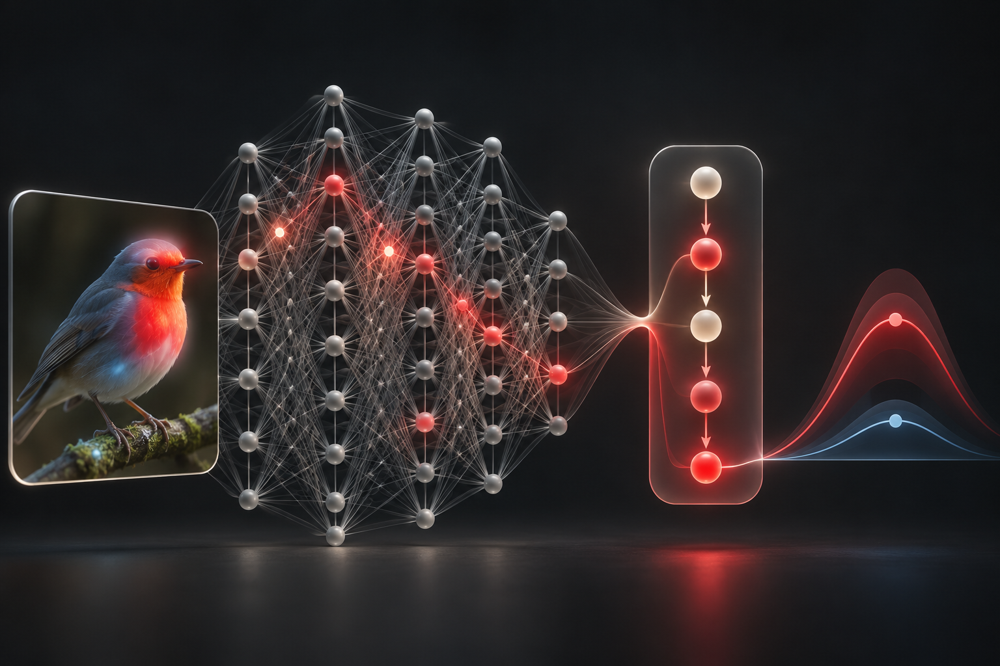
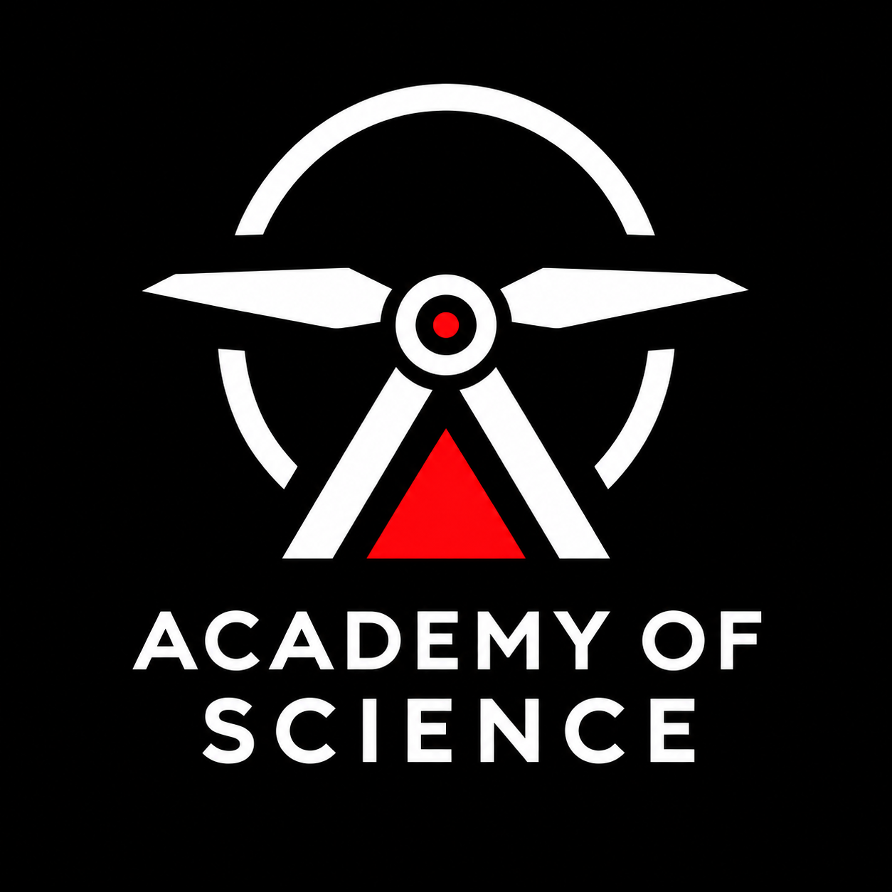
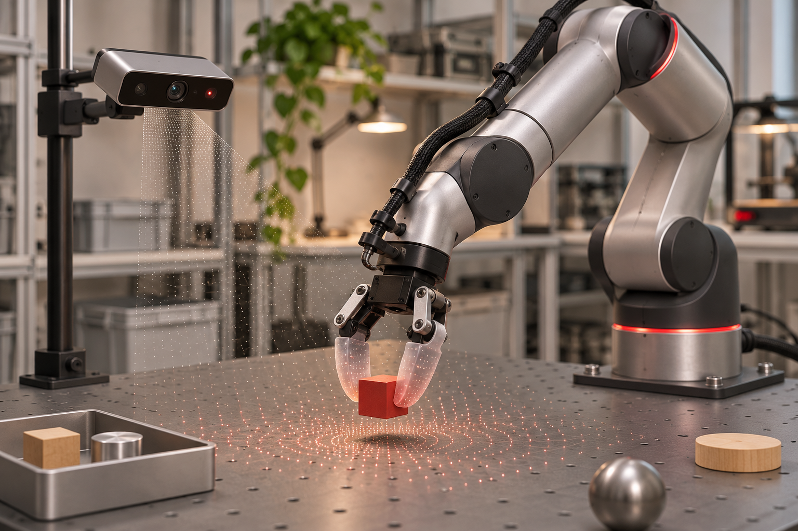
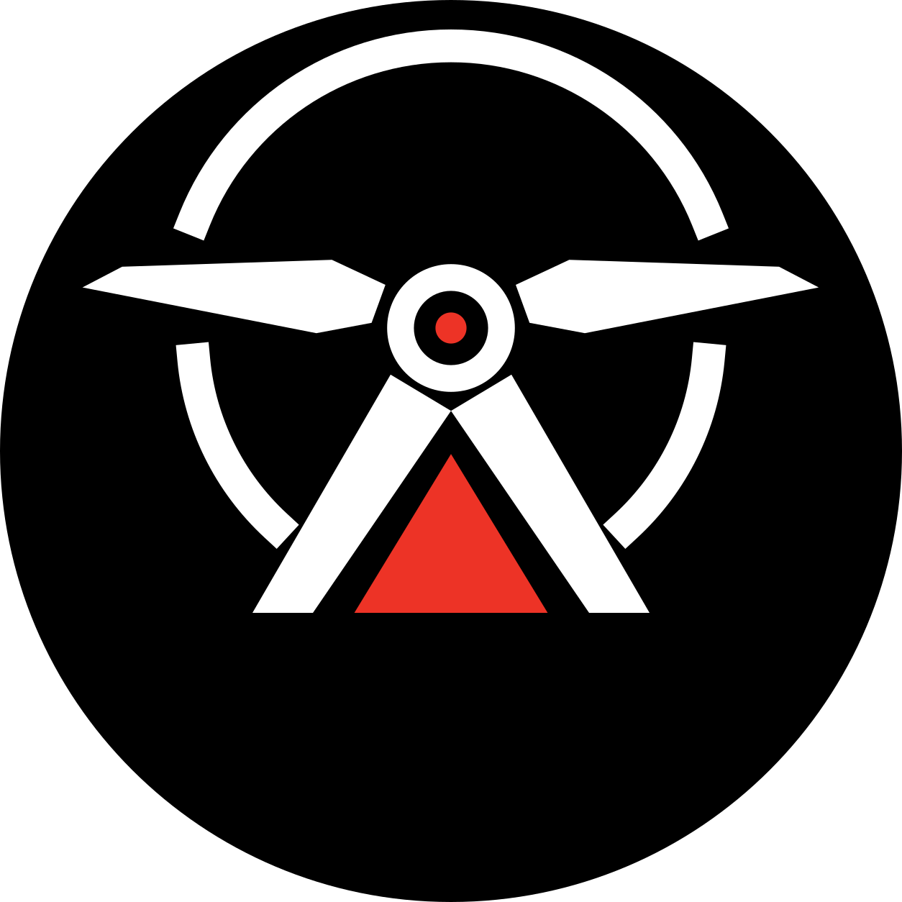

Explainable AI (XAI)
Methods that make model behaviour, evidence, uncertainty, and failure modes open to inspection—especially in high-stakes settings such as medicine.
Explore XAI →
Academy of ScienceIndependent AI research & development00 / THE LAB Independent AI research & development
We explore ambitious AI questions and turn them into systems that can explain, learn, and act in the real world.
Our premise
Some AI problems need more than an off-the-shelf model. They need research, careful experimentation, and the ability to turn an uncertain idea into a system that works.
Specialist capabilities
We work across machine learning and intelligent systems. Explainable AI and Physical AI are our core specializations—not the boundaries of what we can investigate or build.

Methods that make model behaviour, evidence, uncertainty, and failure modes open to inspection—especially in high-stakes settings such as medicine.
Explore XAI →
Intelligent agents that reason, learn, and act through bodies, sensors, and environments—beyond the controlled conditions of the lab.
Explore Physical AI →Shared capability
When a problem demands it, we combine reasoning, explanation, evaluation, perception, and physical action into one research and engineering programme.
How we work
We pursue independent questions and collaborate with companies, laboratories, universities, and domain specialists on difficult AI problems.
Questions we choose and pursue to develop new knowledge, methods, and technical directions.
Technical investigation for organizations when a problem requires research before product development.
Working systems that turn research ideas into something stakeholders can test, evaluate, and develop further.
Study model behaviour, explanations, uncertainty, reliability, and deployment risks.
Application domains
These are areas of active interest, not limits on the projects we undertake.
Field notes
Working research premises alongside clear, useful guides to the ideas behind our work.
A working premise for interpretable decisions, accountable systems, and AI that acts in the physical world.
A plain-language guide to what Explainable AI is, what an explanation can reveal, and where explanations can mislead us.
The lab
Our complementary specializations support both independent research and collaborative AI development across real-world domains.
Physical AI

Academy of ScienceIndependent AI research
India · 2026
00 / THE LAB
We explore ambitious AI questions and turn them into systems that can explain, learn and act in the real world.